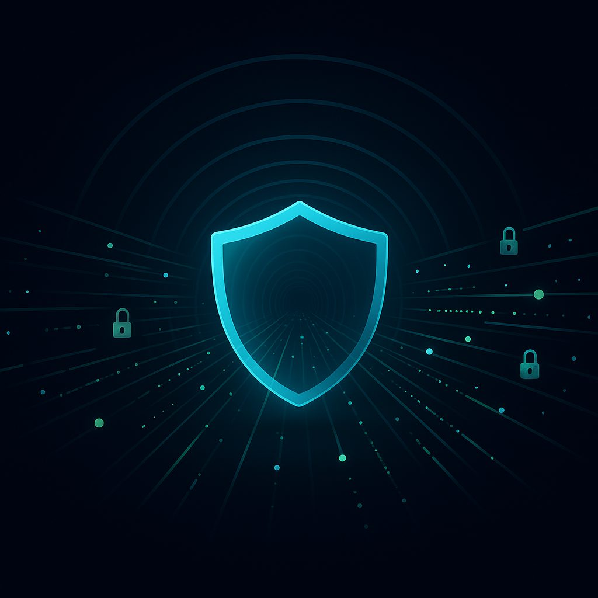

What is a VPN and How Does It Work? Your Guide to Online Freedom and Security
In an increasingly interconnected world, our digital lives are more intertwined with our physical lives than ever before. From banking and shopping to socializing and entertainment, nearly every aspect of modern existence has an online component. But with this convenience comes a growing concern: how do we protect our privacy and security in a digital landscape often rife with snoopers, censors, and cyber threats? The answer, for millions worldwide, lies in a Virtual Private Network, or VPN. If you've heard the term "VPN" but aren't quite sure what it means or how it benefits you, you're in the right place. This comprehensive guide will demystify VPNs, explain their inner workings, and highlight why they are an essential tool for anyone going online in 2026 and beyond.VPN Explained Simply: Your Private Digital Tunnel
Imagine you want to send a secret message across a busy public square. If you just shout it out, everyone can hear it. If you write it on a postcard, anyone can read it along the way. Now, imagine you have a special, private, and invisible tunnel that goes directly from your location to your friend's location. You enter the tunnel, send your message through it, and it emerges safely at your friend's end, without anyone in the public square knowing what you sent or even *that* you sent something to your friend. That's essentially what a VPN does for your internet connection. When you connect to the internet without a VPN, your internet service provider (ISP) and anyone else monitoring the network can see your online activity – which websites you visit, what you download, and even what you say in unencrypted communications. A VPN creates that "private tunnel" between your device (computer, phone, tablet) and a remote server operated by the VPN service. All your internet traffic then travels through this encrypted tunnel, making it invisible and unreadable to anyone outside the tunnel, including your ISP, government agencies, and potential hackers.How VPN Works Technically: Tunneling and Encryption
To understand the magic behind a VPN, let's break down the technical components:1. Tunneling
When you connect to a VPN, your device establishes a secure connection – a "tunnel" – to one of the VPN provider's servers. Instead of your internet traffic going directly from your device to the website you want to visit, it first goes into this encrypted tunnel. Think of it like putting your regular internet data inside another, secure package. This "packaging" process is called encapsulation. Your data is wrapped in an outer packet that contains information about the VPN server's IP address, not your own.2. Encryption
Once your data is inside the tunnel, it's immediately encrypted. Encryption is the process of scrambling your data into an unreadable format using complex algorithms. It's like turning your clear message into a secret code. Only the VPN server, which has the "key" to decrypt the data, can understand it. When your encrypted data reaches the VPN server, the server decrypts it, and then sends it on its way to the final destination (e.g., a website). The website sees the request coming from the VPN server's IP address, not yours. When the website sends data back, it goes to the VPN server, which encrypts it again and sends it back through the tunnel to your device, where your VPN software decrypts it. This two-step process – tunneling and encryption – ensures: * **Anonymity:** Your real IP address is hidden, replaced by the VPN server's IP address. * **Privacy:** Your online activities are encrypted and unreadable to third parties. * **Security:** Your data is protected from interception, especially on unsecured networks.VPN Protocols: The Rules of the Tunnel
Just as there are different types of tunnels, there are different "protocols" that dictate how a VPN tunnel is built and how data is encrypted. Each protocol has its own strengths and weaknesses in terms of speed, security, and ability to bypass restrictions. NoBorder VPN, for instance, offers a range of robust protocols to suit various user needs. Here's a comparison of some popular VPN protocols:| Protocol | Key Characteristics | Security | Speed | Bypass Censorship | Best For |
|---|---|---|---|---|---|
| VLESS | Modern, flexible, stealthy. Often used with XTLS for enhanced performance and obfuscation. Designed for advanced censorship circumvention. | Excellent (often paired with strong encryption like TLS/XTLS) | Very Fast | Excellent (highly effective against deep packet inspection) | Users in highly censored regions, high-performance needs, advanced users. |
| Shadowsocks | Proxy-based, designed to bypass censorship. Masquerades as regular HTTPS traffic, making it hard to detect. | Good (relies on encryption, but not a full VPN tunnel) | Fast | Excellent (specifically designed for this purpose) | Bypassing sophisticated firewalls, users in censored countries. |
| WireGuard | Modern, lightweight, and incredibly fast. Uses state-of-the-art cryptography. Smaller codebase means easier auditing. | Excellent | Extremely Fast | Good (can be detected, but generally robust) | General use, mobile devices, gaming, streaming. |
| OpenVPN | Open-source, highly configurable, and widely trusted. Can run over UDP (faster) or TCP (more reliable over unstable networks). | Excellent (battle-tested, strong encryption) | Good to Moderate (can be slower than WireGuard) | Good (can be configured for obfuscation, but might be detected by advanced firewalls) | General use, high security needs, compatibility with many devices. |
| IKEv2/IPsec | Stable, secure, and excellent for mobile devices due to its ability to re-establish connections quickly. | Excellent | Fast | Moderate (less effective against advanced censorship) | Mobile users, general use, maintaining connection during network changes. |